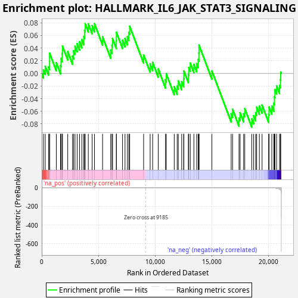
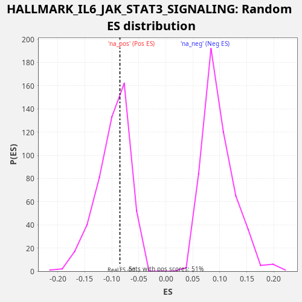

| Dataset | CCLE |
| Phenotype | NoPhenotypeAvailable |
| Upregulated in class | na_neg |
| GeneSet | HALLMARK_IL6_JAK_STAT3_SIGNALING |
| Enrichment Score (ES) | -0.08501936 |
| Normalized Enrichment Score (NES) | -0.8690265 |
| Nominal p-value | 0.6045082 |
| FDR q-value | 0.6839478 |
| FWER p-Value | 1.0 |

| SYMBOL | RANK IN GENE LIST | RANK METRIC SCORE | RUNNING ES | CORE ENRICHMENT | |
|---|---|---|---|---|---|
| 1 | STAT1 | 155 | 1.252 | 0.0056 | Yes |
| 2 | CSF2RA | 310 | 0.290 | 0.0113 | Yes |
| 3 | IL9R | 608 | 0.078 | 0.0102 | Yes |
| 4 | CCR1 | 696 | 0.058 | 0.0190 | Yes |
| 5 | HMOX1 | 697 | 0.058 | 0.0320 | Yes |
| 6 | EBI3 | 1288 | 0.017 | 0.0170 | Yes |
| 7 | PIM1 | 1662 | 0.010 | 0.0122 | Yes |
| 8 | CSF2RB | 1703 | 0.010 | 0.0233 | Yes |
| 9 | BAK1 | 1806 | 0.009 | 0.0315 | Yes |
| 10 | IL1R2 | 1832 | 0.008 | 0.0433 | Yes |
| 11 | TNF | 2293 | 0.005 | 0.0344 | Yes |
| 12 | IFNAR1 | 2715 | 0.003 | 0.0274 | Yes |
| 13 | IL7 | 2811 | 0.003 | 0.0358 | Yes |
| 14 | GRB2 | 2935 | 0.003 | 0.0430 | Yes |
| 15 | PTPN2 | 3126 | 0.002 | 0.0469 | Yes |
| 16 | PTPN11 | 3338 | 0.002 | 0.0499 | Yes |
| 17 | PTPN1 | 3539 | 0.002 | 0.0534 | Yes |
| 18 | IL10RB | 3712 | 0.002 | 0.0582 | Yes |
| 19 | MAP3K8 | 3780 | 0.001 | 0.0680 | Yes |
| 20 | IRF9 | 3831 | 0.001 | 0.0786 | Yes |
| 21 | IL6 | 4110 | 0.001 | 0.0784 | Yes |
| 22 | TNFRSF12A | 4447 | 0.001 | 0.0754 | Yes |
| 23 | STAT3 | 4654 | 0.001 | 0.0786 | Yes |
| 24 | MYD88 | 5366 | 0.000 | 0.0578 | No |
| 25 | HAX1 | 6080 | 0.000 | 0.0369 | No |
| 26 | IL15RA | 6195 | 0.000 | 0.0445 | No |
| 27 | JUN | 6247 | 0.000 | 0.0551 | No |
| 28 | IFNGR1 | 6583 | 0.000 | 0.0521 | No |
| 29 | CD9 | 6585 | 0.000 | 0.0651 | No |
| 30 | STAT2 | 7128 | 0.000 | 0.0523 | No |
| 31 | TNFRSF1A | 7344 | 0.000 | 0.0551 | No |
| 32 | IL13RA1 | 7556 | 0.000 | 0.0581 | No |
| 33 | IL1R1 | 7682 | 0.000 | 0.0651 | No |
| 34 | IL6ST | 7758 | 0.000 | 0.0745 | No |
| 35 | LTBR | 8985 | 0.000 | 0.0293 | No |
| 36 | CBL | 9561 | -0.000 | 0.0149 | No |
| 37 | FAS | 9782 | -0.000 | 0.0175 | No |
| 38 | STAM2 | 10276 | -0.000 | 0.0070 | No |
| 39 | IL4R | 10914 | -0.000 | -0.0103 | No |
| 40 | TNFRSF21 | 10986 | -0.000 | -0.0006 | No |
| 41 | IL12RB1 | 11687 | -0.000 | -0.0209 | No |
| 42 | LEPR | 11946 | -0.000 | -0.0202 | No |
| 43 | IL2RG | 12046 | -0.000 | -0.0119 | No |
| 44 | TYK2 | 12343 | -0.000 | -0.0130 | No |
| 45 | OSMR | 12517 | -0.000 | -0.0082 | No |
| 46 | CSF3R | 12537 | -0.000 | 0.0039 | No |
| 47 | TGFB1 | 12932 | -0.001 | -0.0019 | No |
| 48 | IL17RA | 12967 | -0.001 | 0.0095 | No |
| 49 | ACVR1B | 13100 | -0.001 | 0.0162 | No |
| 50 | SOCS1 | 13417 | -0.001 | 0.0142 | No |
| 51 | CD44 | 13664 | -0.001 | 0.0155 | No |
| 52 | CSF1 | 13801 | -0.001 | 0.0220 | No |
| 53 | IFNGR2 | 13863 | -0.001 | 0.0321 | No |
| 54 | IL3RA | 13871 | -0.001 | 0.0448 | No |
| 55 | IRF1 | 15005 | -0.002 | 0.0039 | No |
| 56 | PDGFC | 16706 | -0.008 | -0.0639 | No |
| 57 | CD38 | 16832 | -0.008 | -0.0568 | No |
| 58 | IL17RB | 17397 | -0.013 | -0.0706 | No |
| 59 | TLR2 | 17494 | -0.014 | -0.0622 | No |
| 60 | SOCS3 | 17802 | -0.019 | -0.0638 | No |
| 61 | LTB | 17906 | -0.021 | -0.0557 | No |
| 62 | A2M | 18524 | -0.038 | -0.0720 | No |
| 63 | CD36 | 18688 | -0.044 | -0.0668 | No |
| 64 | PLA2G2A | 18866 | -0.056 | -0.0622 | No |
| 65 | ITGB3 | 18955 | -0.062 | -0.0534 | No |
| 66 | INHBE | 19192 | -0.084 | -0.0516 | No |
| 67 | CD14 | 19431 | -0.122 | -0.0500 | No |
| 68 | CXCL10 | 20014 | -0.401 | -0.0646 | No |
| 69 | CXCL11 | 20048 | -0.440 | -0.0532 | No |
| 70 | ACVRL1 | 20290 | -0.871 | -0.0517 | No |
| 71 | CSF2 | 20467 | -1.409 | -0.0470 | No |
| 72 | CXCL3 | 20522 | -1.719 | -0.0366 | No |
| 73 | IL18R1 | 20563 | -2.096 | -0.0255 | No |
| 74 | TNFRSF1B | 20714 | -3.722 | -0.0197 | No |
| 75 | CXCL1 | 20972 | -13.356 | -0.0189 | No |
| 76 | IL1B | 21054 | -21.208 | -0.0098 | No |
| 77 | ITGA4 | 21077 | -24.921 | 0.0022 | No |

{kind=link}
{kind=link}